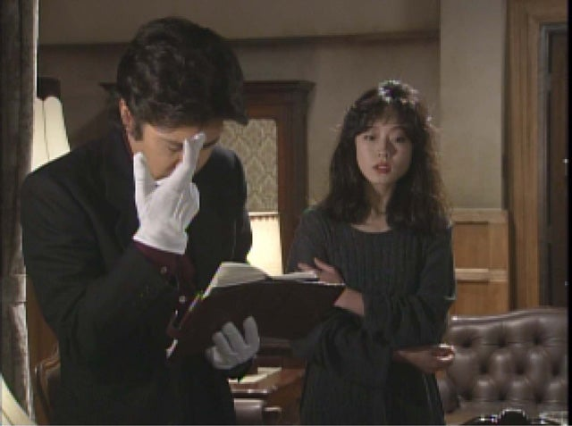
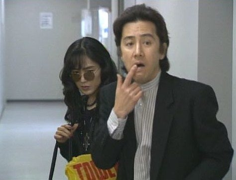

もしかしたら古畑について知らない方もいるかなと思うので紹介？説明？していこうかなと思います。（この機会に好きに興味持ってくれたりちょっとでも見てみようかなと思ってくれたら筆者が泣いて喜びます！！！）古畑って主演の古畑（故田村正和）と部下である今泉（西村まさ彦）が協力？いや主に古畑がですね犯人を捕まえていくんですが、たいてい刑事ドラマって視聴者と一緒に犯人を推測したり、考えていくんですが古畑って最初に犯人が被害者を殺してから物語が始まっていくんですね。古畑ってどうやって話を進めていくかというとですね、古畑が犯人の少しの矛盾だったり何気ない会話から追い詰めていくんですよ。自分が犯人だったら一番いやなタイプですね笑。ねちねち来られて最終的にはも逃げ場がないところまで追い詰められていくんですね。いやー味方にいたら心強いですが敵に回したら終わりですかね。笑すみません、完全に自分の感想になってましたね、話を戻すとですね、古畑ってなんといっても犯人の懐に入るのがうまいんですよこれが。「ちょっとお聞きしたいんですが」だったり、犯人がなにかしらの名手であれば「先生、ちょっとすみません」などなどと。
本題では世間的に一番人気な回と筆者が一番好きな回を紹介しようかなと思います！！！
まあこれは筆者も納得の回ですね。なんとこれ第一話なんですよこれ！！！すごくないですか！！！あらすじをまとめるとですね中森明菜演じる少女コミック作家小石川ちなみが（まだ若い時の中森明菜ちゃんがいい味出してるんだなあこれが...!!!）交際相手の男性を殺してしまううんですね。ちなみは頑張ってアリバイを作ってはいたんですがねどうしても矛盾が発生してしまうんですよ。最終的に物証をドンと出して終わりじゃなくてちなみちゃんしか知らないことを突き付けて終わります。それでですね！！！この回でいちばん人気なシーンってちなみちゃんの逮捕が確定し、『一体私の人生何だって感じ』これに古畑が『まだこれからじゃないですか。カリマンタン（カリマンタンちはちなみ書いているカリマンタンの城という漫画のこと）で言えば第一巻が終わったばかりじゃないですか』『ハッピーエンドは最後に取っておけば良い』この場面が本当に素晴らしいんですよ。...萌えましたね。...古畑って女性犯人には基本的に優しいんですが特に萌えましたね。

文面だけじゃ多分全体の1割も伝えられていないので実際に見てみることを強く推奨いたします...!!!
筆者の個人的おすすめ回
さあさあ、個人的最おすすめ回はですね...桃井かおりさん犯人役の「さよならDJ」
いやーほんっとに好きなんですよこの回！！！まあこの回も桃井さんが味of味なんですよねこれね。あらすじを簡単にまとめるとですね桃井かおり演じるディスクジョッキー中浦たか子はエリ子（中浦の恋人を奪った付き人）をラジオ局の駐車場かな？で殺すことから始まるんですね。なんで古畑がラジオ局に来ているかというとですね、中浦宛にストーカーの殺害予告の手紙が来たんですね。でもそれは中浦が仕込んだものなんですが、、、中浦さんとってもドライでさばさばしてるんですけどとっても惹かれましたね。この回は印象的なシーンがいくつかあるんですが個人的に一番好きなシーンを紹介しますね。三谷幸喜作品ではおなじみなんですが「赤い洗面器の男の話」がありましてね。「ある晴れた日の午後、道を歩いていたら向こうから赤い洗面器を頭に載せた男が歩いてきました。洗面器の中にはたっぷりの水。男はその水を一滴もこぼさないように、ゆっくりゆっくり歩いてきました私は勇気を奮って"ちょっとすいませんが、あなたどうしてそんな赤い洗面器なんか頭に載せて歩いているんですか？"とすると男は答えました。」この話の続きはCMの後でで終わってしまうんですが話の続きは分からずにラジオは終わってしまうんですね。ですね。中浦が連行される直前のシーンで古畑が「...で、あのひとつ気になってたんですが男はどうして赤い洗面器を頭に載せてたんですか？」と聞いた際に中浦が「ヤダ」と答え、「この問題は墓場まで持ち込んでやる」というシーンでこの回は終わるんですね。少し悪い顔した桃井の顔がさいっこうにいいですね

参考リンク
古畑の人気回ランキング
おすすめ回
終わりに
全文読んでくれた方ありがとうございます！！！ちょっとでも見てみようかなーとかでも思ってくれたら筆者はすごく喜びます！！文だけじゃ絶対伝わり切れてないと思うのでぜひ一度見てみて下さい。
遠藤 2026/8/21更新;